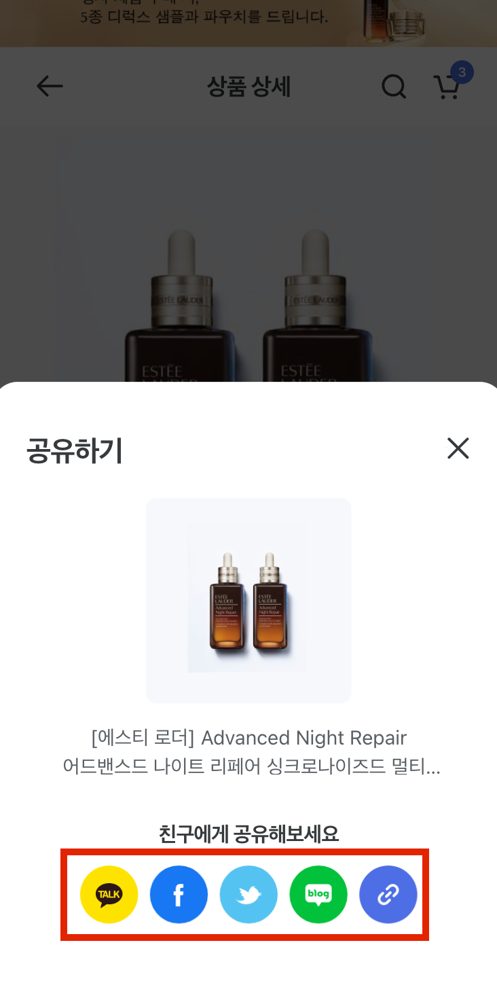
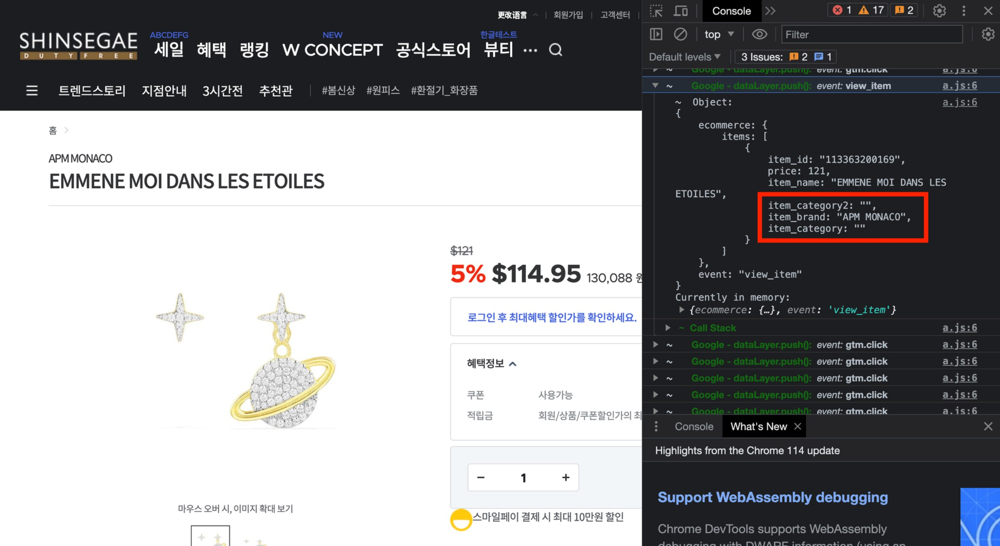
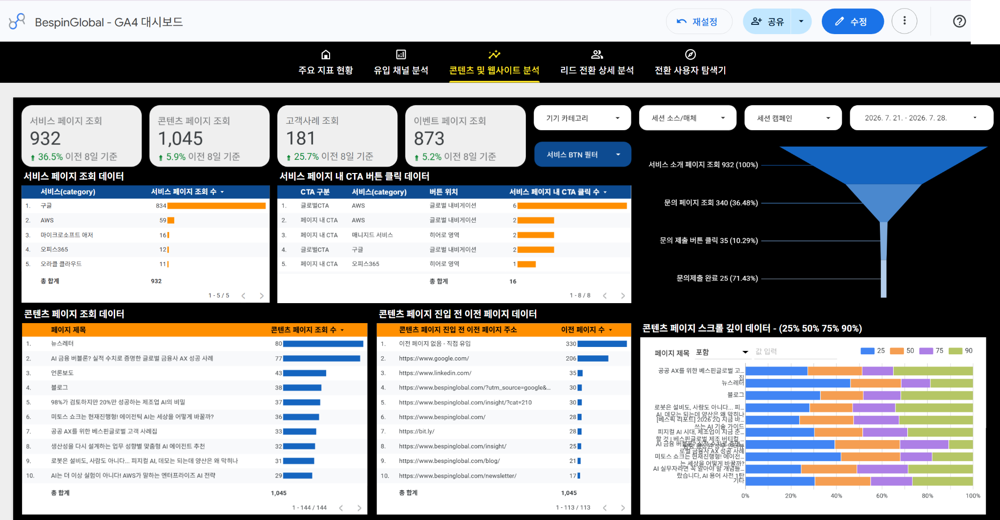
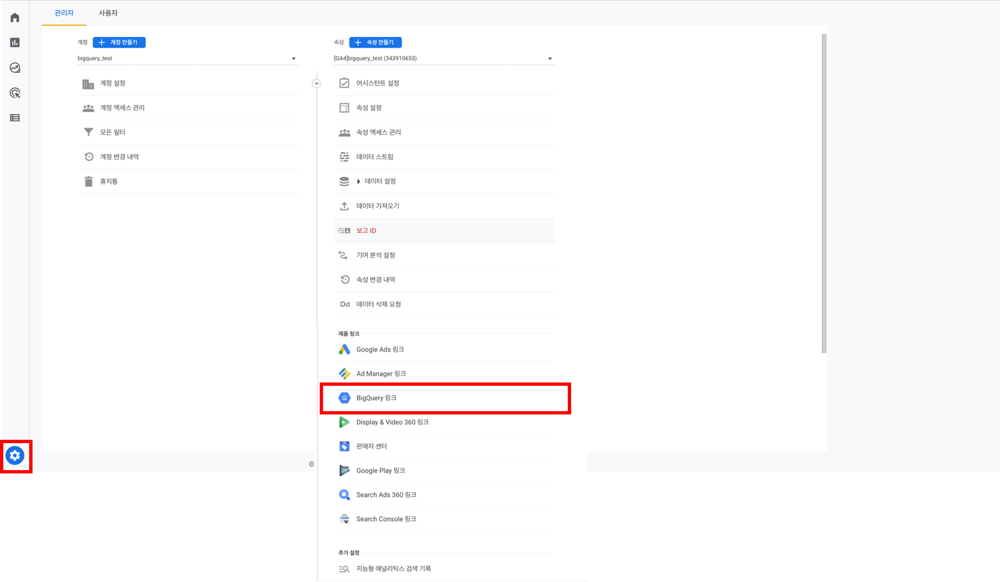
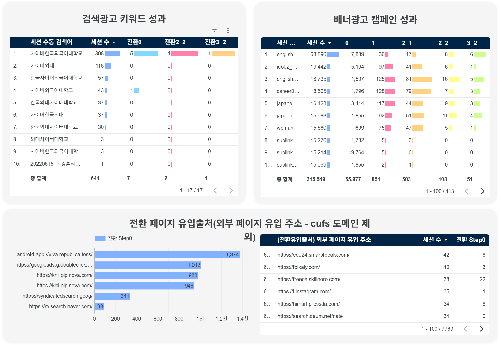

고객이 무엇을 하는지
숫자로 보이게 만듭니다
웹과 앱에서 벌어지는 행동을 세어 두고, 그 숫자 위에서 광고와 자사몰을 고쳐 성과를 끌어올립니다. 오늘은 이 일을 실제 산출물 화면으로 보여 드립니다.
53 프로젝트24 개사 동시 운영3 년 연속 국가사업
![오픈소스마케팅]()
OPEN SOURCE MARKETING / COMPANY DECK
OPEN SOURCE MARKETING
01 / 28
웹과 앱에서 벌어지는 행동을 세어 두고, 그 숫자 위에서 광고와 자사몰을 고쳐 성과를 끌어올립니다. 오늘은 이 일을 실제 산출물 화면으로 보여 드립니다.
무엇을 하는 회사인지 먼저 세우고, 실제 산출물 화면으로 일하는 방식을 본 뒤, 운영 규모와 AI, 앞으로로 마칩니다.
경영 컨설팅과 광고 대행, 마케팅 교육, 그리고 응용 소프트웨어 개발입니다. 네 해 동안 한 일이 이 넷을 벗어나지 않았습니다.
응용 소프트웨어 개발이 업종에 들어 있습니다. 분석 도구를 직접 만들어 프로젝트에 씁니다.
마케팅 교육업이 별도 업종입니다. 고객사 담당자가 스스로 다루게 만드는 데까지가 사업 범위입니다.
프로젝트는 2022년부터 본격적으로 쌓였습니다.
네 해 동안 만난 회사들이 처음에 꺼내는 말은 크게 넷입니다. 업종이 달라도 반복됩니다.
매체가 보내 주는 숫자와 실제 매출이 맞지 않습니다. 어느 광고를 끄고 어느 광고를 늘릴지 정할 근거가 없습니다.
방문자 수는 알지만 어디서 이탈하는지는 모릅니다. 고칠 자리를 짚지 못합니다.
구매가 없는 회사일수록 심합니다. 부서마다 다른 숫자를 성과라고 부릅니다.
도구는 도입했지만 담당자가 다루지 못해 화면이 방치됩니다.
웹과 앱에서 벌어지는 행동을 정해 둔 이름으로 기록해 두는 일입니다. 이것이 되어 있는지에 따라 답할 수 있는 질문이 갈립니다.
매체별로 유입부터 구매까지 한 줄로 이어 볼 수 있습니다.
단계마다 이탈을 세어 두었기 때문에 바로 나옵니다.
행동마다 고객 구분을 함께 남겨 두었기 때문입니다.
무엇을 보고 왔는지 기록이 없어 원인을 좁히지 못합니다.
화면 이동을 세지 않으면 지나온 순서를 되돌릴 수 없습니다.
기준을 미리 정해 두지 않아 판단이 사람마다 갈립니다.
분석 환경을 가운데 두면 일이 넷으로 갈라집니다. 2022년부터 2025년까지 한 프로젝트를 성격으로 묶었습니다.
무엇을 셀지 정하고, 기록이 남게 심고, 담당자가 보는 화면까지 놓습니다. 네 해 동안 가장 많이 한 일입니다.
쌓인 숫자로 가설을 세우고 매체와 자사몰에서 실험을 돌립니다. 집행까지 함께 붙습니다.
고객사 담당자를 가르치고, 국가 지원사업의 운영사를 맡습니다.
2025년 말부터 들어온 일입니다. 업무 순서 안에 AI를 넣고 도구를 붙입니다.
일이 끝난 뒤 고객사에 무엇이 남는지로 우리 일을 설명합니다.
계약이 끝나면 판단 근거도 함께 나갑니다
우리가 빠져도 기록은 남아 계속 쌓입니다
같은 캠페인을 두고 평가가 갈립니다
이벤트 정의서에 적힌 대로 셉니다
설정을 아는 사람이 없어 화면이 멈춥니다
고치는 법까지 넘기고 나옵니다
분석 환경 구축은 업종이 달라도 이 순서를 지납니다.
화면을 함께 보며 성과로 셀 행동을 고릅니다. 여기서 고르지 않은 행동은 나중에 되돌려 볼 수 없습니다.
행동의 이름과 발생 조건, 함께 남길 정보를 표로 적습니다. 개발과 마케팅이 같은 문서를 봅니다.
개발이 코드를 심고, 우리가 태그를 붙여 행동마다 기록이 남게 합니다.
빠진 기록과 두 번 세어진 기록을 잡습니다. 여기서 걸러야 화면의 숫자를 믿을 수 있습니다.
담당자가 매일 여는 대시보드에 지표를 배치합니다. 항목을 직접 더할 수 있는 구조로 둡니다.
정의서 읽는 법과 태그 고치는 법을 교육으로 옮깁니다.
업종이 달라도 순서가 바뀌지 않습니다
네 번째 단계까지가 정의서를 지키는 일입니다
단계마다 남는 산출물을 다음 장부터 실제 화면으로 봅니다
| 구분 | 이벤트 | 이벤트명 | 매개변수 | 뜻 | 값 예시 |
|---|---|---|---|---|---|
| 견적 및 도입문의 | 견적 문의 1단계 | add_to_cart | step | 견적 문의 순서 | 고정: 1 |
| item_type | 1단계 검색 유형 | 제품별 또는 플랫폼별 | |||
| 견적 문의 2단계 | begin_checkout | items.item_name | 제품 이름 | 지능형 위협 대응 | |
| items.item_variant | 재계약 여부 | y/n | |||
| 견적 문의 3단계, 완료 | purchase | company_type | 회사 유형 | 공공/교육/기업/금융 | |
| 회원가입 | 회원가입 완료 | sign_up_3_complete | account_type | 회원 구분 | 기업회원/개인회원 |
| mkt_agreement | 마케팅 수신 동의 | y/n |
2024년 안랩 프로젝트에서 실제로 쓴 정의서입니다. 문서 원본은 구글 시트로 고객사에 남아 있습니다.

// 장바구니 페이지 진입 시 아래 스크립트를 실행합니다 dataLayer.push({ event: 'view_cart', items: [{ item_id: '{상품 ID}', item_name: '{상품 이름}', item_brand: '{브랜드 이름}', item_category: '{카테고리 이름}', price: '{상품 판매가}', quantity: '{상품 수량}' }] });
2023년 신세계면세점 프로젝트에서 실제로 넘긴 가이드입니다.

2023년 신세계면세점 디버깅 방문 기록에 남은 실제 검수 화면입니다.

2026년 베스핀글로벌 프로젝트에서 실제로 운영 중인 대시보드입니다.

신세계면세점에 넘긴 GA4 빅쿼리 연결 가이드의 실제 화면입니다. 시연용 테스트 계정으로 만들었습니다.
실제 노션 워크스페이스의 교보문고 문서방 구성을 이름 그대로 옮겼습니다.

2026년 사이버한국외대 입학 홍보 프로젝트의 실제 광고 성과 화면입니다.
2024년부터 세 해 연속으로 운영사를 맡았고, 세 번째 사업이 진행 중입니다.
2026년 사업에서 동시에 진행하는 기업 수입니다.
우리 다섯 명에 파트너사 인력을 붙여 편성합니다.
6월에 열어 9월과 10월에 닫습니다.
2026년 9월 첫 주의 실제 채널 기록입니다. 컨설턴트 이름은 가렸습니다.
2026년 사업 채널에 실제로 올라온 봇 메시지입니다.
주간 보고에 함께 적는 숫자입니다. 적는 사람마다 뜻이 달라지므로 단계마다 기준을 정해 둡니다. 오른쪽이 실제 기준표입니다.
기준표를 만들어 두고 그 단계에 닿았을 때만 숫자를 올립니다.
파트너사 인력이 섞여 있어도 70퍼센트의 뜻이 같습니다.
여러 주 같은 숫자에 머물면 어느 단계에서 막혔는지 보입니다.
주간에 쌓인 것이 위로 어떻게 올라가는지 봅니다. 주기마다 문서를 새로 만들면 스물네 곳을 감당하지 못합니다.
기업별 구글 문서의 주간 요약 탭입니다. 두세 줄과 진행률을 컨설턴트가 직접 씁니다.
한국관광공사 서울센터에서 대면으로 보고합니다. 주간 기록이 모인 유형별 마스터 시트가 자료입니다.
유형 2는 캠페인 계획서를 먼저 내고 집행 뒤 결과보고서를 냅니다. 앞 장의 봇이 D-7과 D-2에 알립니다.
다루는 데이터는 같지만 어디까지 맡는지가 달라졌습니다.
무엇을 셀지 정하고 기록을 심어 두는 일이었습니다
베스핀글로벌 리드 스코어링처럼 무엇이 유망한지 매기는 일이 들어왔습니다
사람이 열어 보고 해석하는 화면이었습니다
남유 FNC 광고 분석처럼 어디를 볼지 도구가 먼저 말합니다
분석 도구를 쓰는 방법이었습니다
AI를 어느 단계에 넣을지가 교육 주제가 되었습니다
도구를 소개하는 일과 실제로 쓰게 만드는 일 사이에 이 다섯 단계가 있습니다.
지금 누가 무엇에 쓰고 있는지 봅니다. 개인이 챗봇 하나를 쓰는 상태가 대부분입니다.
어떤 도구를 몇 계정, 어느 요금제로 쓸지 정합니다. 예산과 정산 방식까지 함께 봅니다.
담당자 노트북에 도구를 설치하고 회사 데이터에 연결합니다. 이 단계를 대면으로 합니다.
반복 업무 하나를 골라 자동화합니다. 담당자가 직접 손을 움직이는 실습으로 넘깁니다.
새 업무에 스스로 붙일 수 있게 두고 나옵니다.
| 유입 채널 | 방문 | 문의 완료 | 전환율 |
|---|---|---|---|
| 네이버 검색광고 | 4,120 | 86 | 2.09% |
| 구글 검색 | 2,860 | 41 | 1.43% |
| 인스타그램 광고 | 5,340 | 37 | 0.69% |
| 직접 방문 | 1,980 | 22 | 1.11% |
2026년 지원사업 참여 기업의 노트북마다 실제로 설치하는 기능입니다. 화면의 수치는 시연용 예시입니다.
매주 반복되던 보고 작업 하나가 어떻게 바뀌는지 흐름으로 봅니다.
2부에서 심어 둔 기록이 매일 쌓입니다.
사람이 열던 화면을 정해진 시각에 코드가 대신 엽니다.
지난주와 달라진 자리를 짚어 두세 문단으로 씁니다.
월요일 아침, 담당자 채널에 요약이 먼저 와 있습니다.
매주 월요일 한 시간을 복사와 붙여넣기에 씁니다
그 한 시간을 요약을 읽고 판단하는 데 씁니다
한도 안에서 도구를 어떻게 조합할지 정하는 일입니다. 예산을 어디에 쓰는지에 따라 성과가 달라집니다.
기업당 지원 한도가 정해져 있습니다. 무엇을 몇 개월 쓸지 계산해 조합을 제안합니다.
개발 목적이면 상위 요금제를, 가벼운 작업이면 기본 요금제 계정을 여러 개 붙입니다.
선불 충전이나 사용량 과금은 정산 절차에 맞지 않습니다. 플랜 단위 결제를 권합니다.
2022년부터 2025년까지 53건을 고객사 성격으로 묶으면 네 갈래입니다. 칸에 다 담기지 않은 곳은 생략했습니다.
연혁의 굵은 항목을 따라가면 흐름이 보입니다. 2025년의 AI 프로젝트 둘이 앞으로 갈 방향을 정했습니다.
분석과 마케팅 위에 AI를 얹는 일을 사업의 가운데로 옮깁니다. 도구를 파는 대신 업무 순서 안에 넣습니다.
안에서 쓰던 도구를 고객사가 직접 여는 물건으로 키웁니다. 사람을 늘리지 않고 닿는 곳을 넓히는 길입니다.
오늘 본 정의서와 가이드, 검수 화면, 대시보드가 그 증거입니다. 무엇을 셀지 정하고, 기록이 남게 만들고, 그 숫자로 마케팅을 고치는 일을 네 해 동안 반복했습니다.